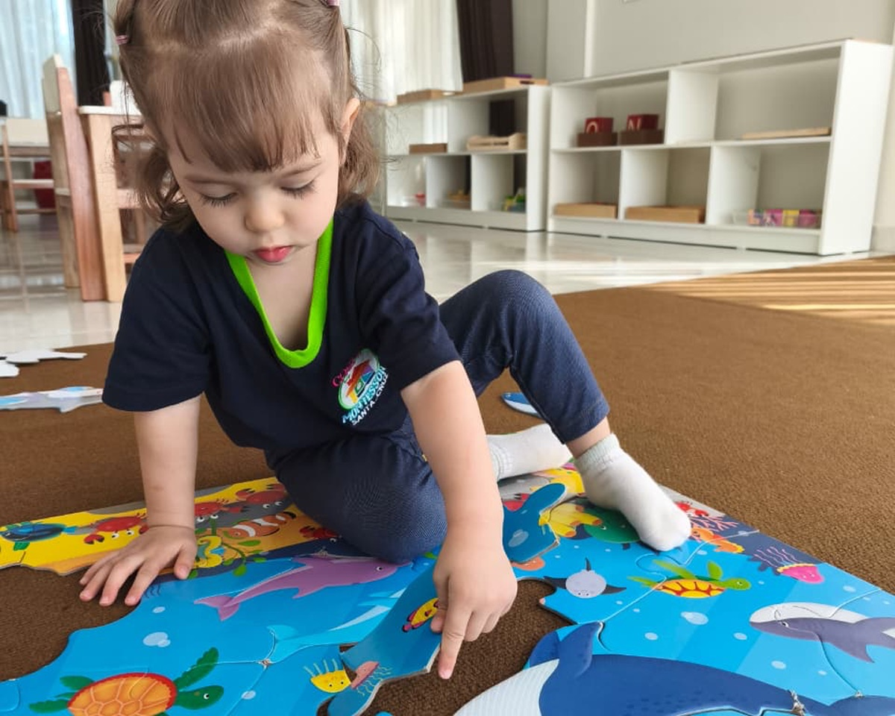

Un espacio donde los niños de 8 meses a 5 años pueden explorar, aprender y desarrollar su independencia con tranquilidad. Ambientes adaptados, acompañamiento respetuoso y cámaras en vivo para que siempre te sientas cerca de tu hijo.

Confiar el cuidado de tu hijo a otras personas no es una decisión sencilla. Por eso hemos creado un entorno seguro, cómodo y preparado para acompañarlo con respeto, mientras tú tienes acceso en todo momento ver qué está haciendo.
Mantente cerca de tu hijo durante la jornada con acceso a cámaras en vivo siempre que lo necesites.
Cada niño es entregado únicamente a sus padres o a los adultos previamente autorizados, siguiendo un protocolo de identificación y cuidado.
Espacios adaptados para niños pequeños, con materiales seguros, muebles a su altura y ambientes limpios que favorecen su exploración con confianza.
Cuando ocurre algo importante, nos comunicamos contigo de manera oportuna para que siempre estés informado.
Acompañamos a cada niño con paciencia, cariño y a su propio ritmo, para que se sienta seguro desde el primer día.
Nuestras educadoras acompañan a los niños durante toda la jornada, guiándolos en sus actividades, hábitos de higiene, alimentación y momentos de juego.
Cámaras en vivo
Acceso libre a las cámaras durante toda la jornada, sin restricciones de horario. Muchos papás lo describen como el detalle que los terminó de convencer.
Los aprendizajes más importantes nacen de las pequeñas acciones de cada día. Cuando un niño elige una actividad, guarda sus materiales, lava sus manos o participa en su rutina, descubre que es capaz de hacer cada vez más por sí mismo.
Acompañados siempre por nuestras educadoras, los niños aprenden a elegir, participar en sus rutinas y resolver pequeñas tareas por sí mismos.
Poco a poco aprenden a cuidar sus materiales y guardar sus pertenencias. Un ambiente organizado les ayuda a sentirse seguros.
Nuestros espacios están preparados para que los niños puedan moverse, descubrir y experimentar con libertad, en un entorno seguro y adaptado a su edad.
Lavarse las manos, compartir la merienda, construir, clasificar o crear con sus manos fortalece su concentración, coordinación y autonomía.
Establecemos límites claros con paciencia y afecto, entendiendo que cada error es una oportunidad para aprender y crecer.
Cada niño tiene su propio tiempo para descubrir el mundo. Lo acompañamos sin presiones ni comparaciones, celebrando cada avance.
"No hacemos todo por ellos; los acompañamos para que descubran que pueden hacerlo."Lic. Wara Muñoz Villarroel · Guía Montessori, Casita
Cada niño vive su propio proceso de crecimiento. Más que prometer resultados, compartimos los cambios que muchas familias empiezan a observar en el día a día, dentro y fuera de casa.
Poco a poco expresan mejor lo que sienten y necesitan. Su vocabulario se amplía y ganan confianza para comunicarse con quienes los rodean.
A través del juego y las actividades diarias fortalecen movimientos, mejoran su coordinación y descubren nuevas habilidades con sus manos y su cuerpo.
Aprenden a compartir, esperar su turno, colaborar y relacionarse con otros niños en un ambiente de respeto y acompañamiento.
Acciones sencillas como lavarse las manos, ordenar sus pertenencias o cuidar sus materiales comienzan a convertirse en parte de su rutina.
Poco a poco participan con mayor autonomía en actividades cotidianas, disfrutando la satisfacción de descubrir que pueden hacerlo.
Aprenden a dedicar tiempo a una actividad, explorarla con calma y finalizarla antes de pasar a la siguiente, desarrollando paciencia y gusto por aprender.
Cada jornada combina momentos de aprendizaje, juego y cuidado dentro de una rutina que les brinda seguridad, confianza y tranquilidad.
Comenzamos el día con calma. Los niños organizan sus pertenencias, cambian sus zapatos y se preparan para disfrutar de una nueva jornada.
Cada niño elige la actividad que más despierta su interés, mientras nuestras educadoras acompañan y observan respetando su iniciativa y su ritmo.
A través de juegos, materiales y actividades prácticas, descubren nuevos conocimientos y fortalecen habilidades para la vida diaria.
La merienda es un espacio para conversar y fortalecer hábitos saludables. Cada familia puede enviar el alimento de su hijo o acceder al servicio de merienda saludable.
Lavarse las manos, cuidar sus materiales y ordenar su espacio son pequeñas acciones que, con el tiempo, se convierten en parte natural de su día.
El juego libre y las actividades al aire libre les permiten explorar, moverse, descansar y compartir con otros niños en un ambiente seguro.
La jornada termina con una entrega organizada y segura. Cada niño es recibido únicamente por sus padres o por los adultos previamente autorizados.
Atendemos también durante los periodos de vacaciones escolares, para que las familias puedan mantener una rutina estable de cuidado y acompañamiento.
Niños que gatean hasta niños que caminan sin ayuda.
Niños que ya señalan o piden algo hasta niños que ya unen frases cortas.
Niños que ya expresan ideas cortas hasta niños con lenguaje fluido y control del cuerpo más preciso.
Niños que ya expresan ideas cortas hasta niños con lenguaje fluido y control del cuerpo más preciso.
Las guías acompañan la realización de las tareas de niños hasta los 7 años.
Consulta nuestros planes mensuales y descuentos por hermanos.
Estamos presentes en la Zona Norte y el Urubó de Santa Cruz de la Sierra, y en Cala Cala, Cochabamba, para que puedas elegir la sede que mejor se adapte a tu día a día y acompañar a tu hijo con mayor comodidad y tranquilidad.
Sabemos que elegir una guardería genera muchas preguntas. Si no encuentras aquí la respuesta que buscas, estaremos encantados de ayudarte por WhatsApp.
Aproximadamente desde los 8 meses. Sin embargo no hay un requisito de edad exacta, pues evaluamos la etapa de desarrollo de cada niño.
Hasta antes de iniciar kinder, aproximadamente a los 5 años. El objetivo es que los niños salgan de Casita Montessori listos para la siguiente etapa educativa.
Sí. Los padres tienen acceso libre a las cámaras durante la jornada. Al momento de inscribir, te explicamos cómo conectarte desde tu teléfono.
En Casita, Montessori se expresa en las rutinas diarias: el niño elige su actividad, ordena sus materiales, lava sus manos, guarda sus cosas. No hacemos todo por él; lo acompañamos para que descubra que puede hacerlo. No usamos Montessori como etiqueta ni como teoría; lo vivimos en cada momento de la jornada.
La adaptación se hace con paciencia, sin forzar tiempos. Los primeros días, los padres pueden quedar más tiempo si el niño lo necesita. Hay comunicación más frecuente durante esa etapa para que los papás sepan cómo va el proceso.
Sí, aceptamos niños con pañal y acompañamos el proceso de control de esfínteres con respeto y sin presión. Es una rutina más de la jornada, coordinada con los padres.
Los niños pueden llevar su propia merienda de casa. También existe un servicio opcional de merienda saludable preparada en la guardería. Consulta disponibilidad y costo por WhatsApp.
Solo los padres o adultos previamente autorizados por la familia. La entrega se hace en puerta, con confirmación de identidad. No hay excepciones.
Sí. Puedes agendar una visita para conocer el espacio, el equipo y hacer las preguntas que necesites. → Agendar visita por WhatsApp
Sí, incorporamos actividades en inglés como parte de la experiencia de aprendizaje. Sin embargo, Casita Montessori no es un centro bilingüe: el acompañamiento principal se realiza en español y el inglés se trabaja de manera complementaria, mediante dinámicas, canciones, vocabulario y actividades acordes a la edad.
Los precios y la disponibilidad de cupos cambian según el turno y la sucursal. La manera más directa de saberlo es escribirnos. → Consultar por WhatsApp
Esa información depende del turno y la sucursal. Consúltanos por WhatsApp y te damos el detalle actualizado. → Consultar por WhatsApp
Sí. Casita Montessori trabaja durante todo el año y continúa atendiendo en los periodos de vacaciones escolares. Así, los niños pueden mantener su rutina y las familias no necesitan buscar una alternativa temporal de cuidado. Consulta por WhatsApp los días y horarios disponibles para cada sucursal.
Detrás de cada sonrisa, cada pequeño logro y cada nuevo aprendizaje hay un equipo que acompaña a los niños con paciencia, dedicación y respeto por su ritmo.
Lidera un equipo comprometido con brindar una experiencia educativa basada en el respeto, la autonomía y el aprendizaje activo. Su enfoque combina el acompañamiento cercano a las familias con un ambiente preparado para favorecer el desarrollo integral de cada niño.
Wara combina su formación en psicología educativa con la guía Montessori para acompañar a cada niño desde su propio ritmo. Su mirada clínica y su sensibilidad hacia el desarrollo temprano son la base del trabajo en sala.
"Como padres nos es difícil confiar a terceros el cuidado de nuestros pequeños… En Casita Montessori no solo me la cuidaron desde que tenía un año, también le enseñaron a ser independiente y proactiva. Lograr que un niño de esa edad se entusiasme todos los días con ir a la escuela y estar con sus tías… solo se puede conseguir con un trabajo hecho con amor y dedicación. Excelentes profesionales, sigan adelante."
"Lucía llegó a Casita Montessori cuando tenía 1 año y 10 meses, y desde el primer día sentimos mucha tranquilidad. Hemos visto cómo ganó confianza, autonomía y seguridad en sí misma. Valoramos muchísimo el cariño con el que la acompañan, la comunicación constante con las profes y saber que cada día está en un ambiente donde realmente disfrutan verla crecer."